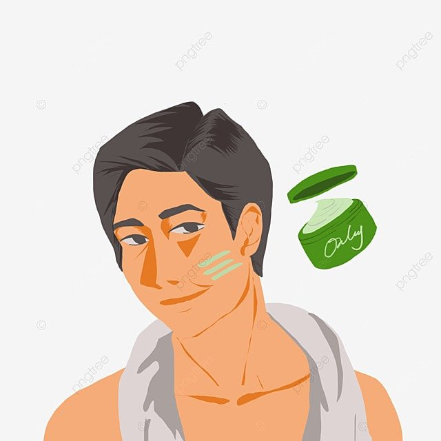
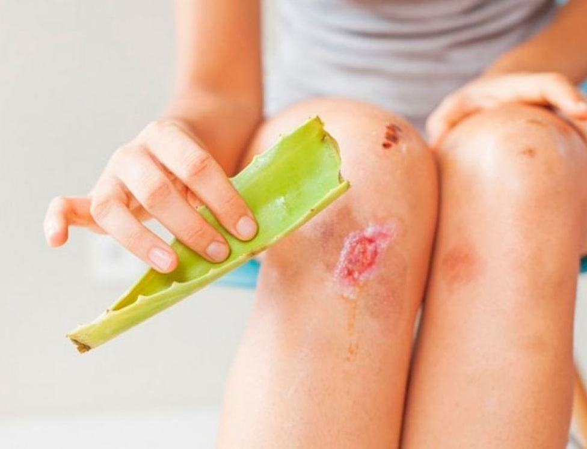
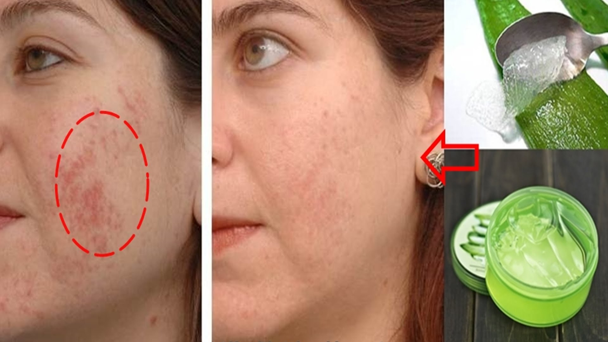

Cuidado de la piel: El gel de aloe vera se utiliza ampliamente
para tratar quemaduras solares, quemaduras menores,
irritaciones cutaneas, eczema y psoriasis. Tambien puede ayudar a reducir la picazon y la inflamacion.
El gel de aloe vera es conocido por su capacidad para hidratar la piel de manera efectiva. Contiene agua en un
99%, lo que lo convierte en un humectante natural.

Cicatrizacion de heridas: Se ha demostrado que el aloe vera
acelera la cicatrizacion de heridas y cortes menores debido a sus propiedades antiinflamatorias y estimulantes
del colageno. El aloe vera contiene una serie de componentes beneficiosos para la piel, incluyendo vitaminas,
minerales,
enzimas, aminoacidos y polisacaridos. Algunas de estas sustancias pueden ayudar en el proceso de cicatrizacion.

Tratamiento de acne: El aloe vera puede ayudar a reducir el enrojecimiento y la inflamacion
asociados con el
acne. Tambien puede ayudar a sanar las lesiones de la piel mas
rapidamente. El aloe vera tiene propiedades antiinflamatorias que pueden reducir la inflamacion, el enrojecimiento
y la
hinchazon asociados con el acne. Esto puede ayudar a aliviar el malestar y mejorar la apariencia de las lesiones.